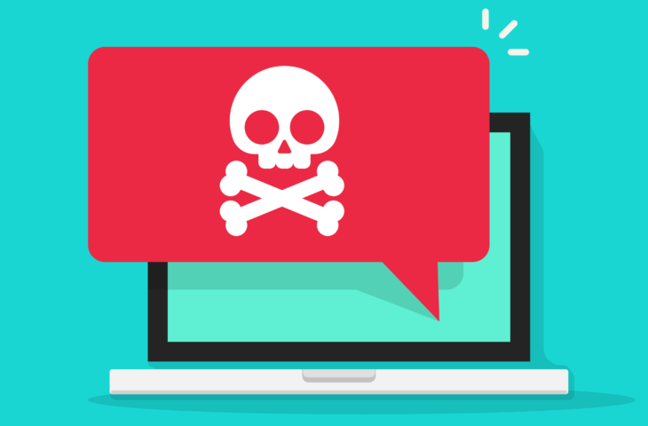
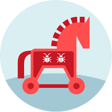

Malware

Malware (a portmanteau for malicious software) is any software intentionally designed to cause disruption to a computer, server, client, or computer network, leak private information, gain unauthorized access to information or systems, deprive access to information, or which unknowingly interferes with the user's computer security and privacy.[2][3][4][5][6] By contrast, software that causes harm due to some deficiency is typically described as a software bug.[7] Malware poses serious problems to individuals and businesses on the Internet.[8][9] According to Symantec's 2018 Internet Security Threat Report (ISTR), malware variants number has increased to 669,947,865 in 2017, which is twice as many malware variants as in 2016.[10] Cybercrime, which includes malware attacks as well as other crimes committed by computer, was predicted to cost the world economy $6 trillion USD in 2021, and is increasing at a rate of 15% per year.[11]
Many types of malware exist, including computer viruses, worms, Trojan horses, ransomware, spyware, adware, rogue software, wiper, and scareware. The defense strategies against malware differ according to the type of malware but most can be thwarted by installing antivirus software, firewalls, applying regular patches to reduce zero-day attacks, securing networks from intrusion, having regular backups and isolating infected systems. Malware is now being designed to evade antivirus software detection algorithms.[10]
Malware (a portmanteau for malicious software)[1] is any software intentionally designed to cause disruption to a computer, server, client, or computer network, leak private information, gain unauthorized access to information or systems, deprive access to information, or which unknowingly interferes with the user's computer security and privacy.[2][3][4][5][6] By contrast, software that causes harm due to some deficiency is typically described as a software bug.[7] Malware poses serious problems to individuals and businesses on the Internet.[8][9] According to Symantec's 2018 Internet Security Threat Report (ISTR), malware variants number has increased to 669,947,865 in 2017, which is twice as many malware variants as in 2016.[10] Cybercrime, which includes malware attacks as well as other crimes committed by computer, was predicted to cost the world economy $6 trillion USD in 2021, and is increasing at a rate of 15% per year.[11]
Many types of malware exist, including computer viruses, worms, Trojan horses, ransomware, spyware, adware, rogue software, wiper, and scareware. The defense strategies against malware differ according to the type of malware but most can be thwarted by installing antivirus software, firewalls, applying regular patches to reduce zero-day attacks, securing networks from intrusion, having regular backups and isolating infected systems. Malware is now being designed to evade antivirus software detection algorithms.[10]
methods
These categories are not mutually exclusive, some malware may use multiple techniques.[39]
Trojan horse
A Trojan horse is a harmful program that misrepresents itself to masquerade as a regular, benign program or utility in order to persuade a victim to install it. A Trojan horse usually carries a hidden destructive function that is activated when the application is started. The term is derived from the Ancient Greek story of the Trojan horse used to invade the city of Troy by stealth.[40][41][42][43][44]
Trojan horses are generally spread by some form of social engineering, for example, where a user is duped into executing an email attachment disguised to be unsuspicious, (e.g., a routine form to be filled in), or by drive-by download. Although their payload can be anything, many modern forms act as a backdoor, contacting a controller (phoning home) which can then have unauthorized access to the affected computer, potentially installing additional software such as a keylogger to steal confidential information, cryptomining software or adware to generate revenue to the operator of the trojan.[45] While Trojan horses and backdoors are not easily detectable by themselves, computers may appear to run slower, emit more heat or fan noise due to heavy processor or network usage, as may occur when cryptomining software is installed. Cryptominers may limit resource usage and/or only run during idle times in an attempt to evade detection.

Unlike computer viruses and worms, Trojan horses generally do not attempt to inject themselves into other files or otherwise propagate themselves.[46]
In spring 2017 Mac users were hit by the new version of Proton Remote Access Trojan (RAT)[47] trained to extract password data from various sources, such as browser auto-fill data, the Mac-OS keychain, and password vaults.[48]
Rootkits
Main article: Rootkit
Once malicious software is installed on a system, it is essential that it stays concealed, to avoid detection. Software packages known as rootkits allow this concealment, by modifying the host's operating system so that the malware is hidden from the user. Rootkits can prevent a harmful process from being visible in the system's list of processes, or keep its files from being read.[49]
Some types of harmful software contain routines to evade identification and/or removal attempts, not merely to hide themselves. An early example of this behavior is recorded in the Jargon File tale of a pair of programs infesting a Xerox CP-V time sharing system:
Each ghost-job would detect the fact that the other had been killed, and would start a new copy of the recently stopped program within a few milliseconds. The only way to kill both ghosts was to kill them simultaneously (very difficult) or to deliberately crash the system.[50]

Backdoors
Main article: Backdoor (computing)
A backdoor is a method of bypassing normal authentication procedures, usually over a connection to a network such as the Internet. Once a system has been compromised, one or more backdoors may be installed in order to allow access in the future,[51] invisibly to the user.
The idea has often been suggested that computer manufacturers preinstall backdoors on their systems to provide technical support for customers, but this has never been reliably verified. It was reported in 2014 that US government agencies had been diverting computers purchased by those considered "targets" to secret workshops where software or hardware permitting remote access by the agency was installed, considered to be among the most productive operations to obtain access to networks around the world.[52] Backdoors may be installed by Trojan horses, worms, implants, or other methods.[53][54]